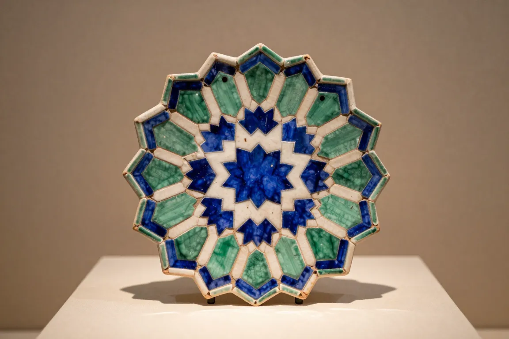

Moroccan tile work in which a potter glazes a square tile in one colour, fires it, and then chisels it by hand into small pieces. A worker sets the pieces face down to make a geometric mosaic.

Core thesis
Hand-cut pieces of one-colour glazed clay make a pattern that is exact in its geometry and alive in its surface.
Design principles
Form a square tile of 10 cm by 10 cm, 12 to 15 mm thick, from local clay, and glaze it in one colour.
Chisel each fired tile with a sharp hammer into the pieces of the pattern, and cut by eye along a line.
Set the pieces face down on the drawn pattern, then pour a plaster and cement backing over them.
Base the geometry on an 8-point or 12-point star, so that every piece fits a known grid.
Limit the colours to white, green, blue, yellow, black and a warm brown, each from one oxide.
Keep the joints thin, under 2 mm, and accept a small difference in level between pieces.
Lay the mosaic as a dado up to a height of about 1.5 m, and finish the wall above it in carved plaster.
Use plain single-colour field tiles near a pattern, so that the eye has a place to rest.
Anti-patterns
A printed pattern on a flat machine-made tile
A perfectly even glaze with no change of tone from tile to tile